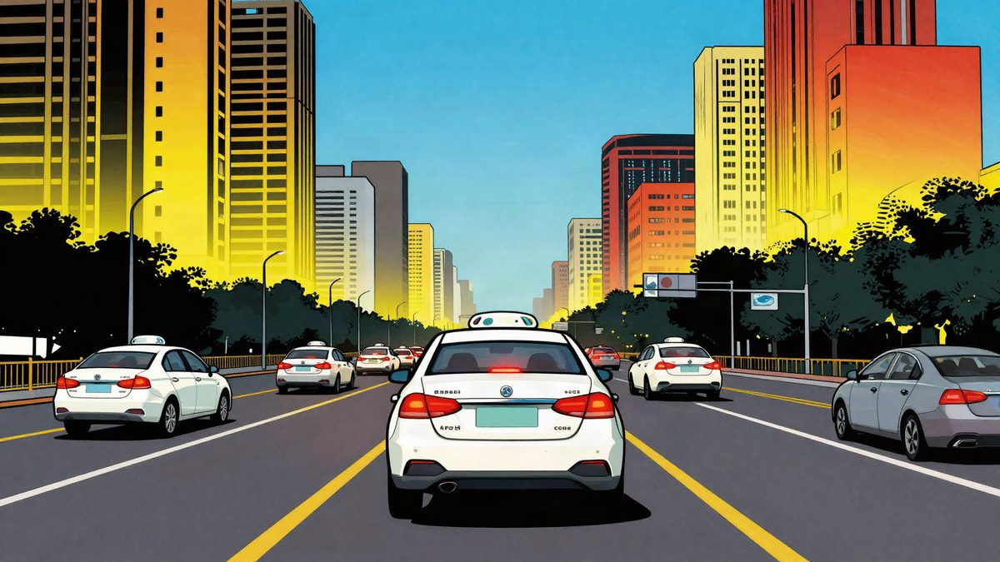
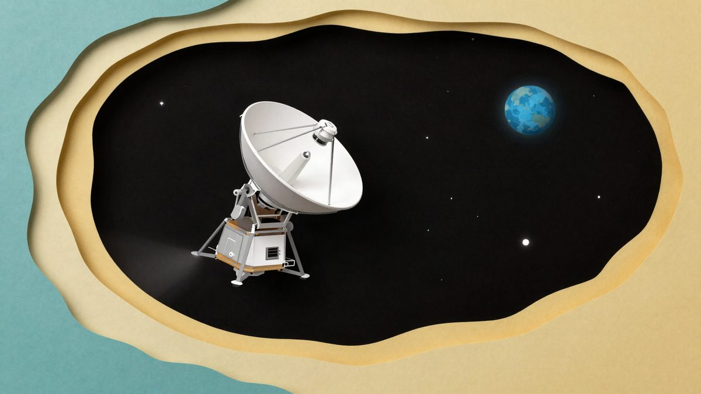

Dan kao vozač ride-hailing aplikacije u Kini: 18 vožnji, 8,7 sati u mreži i manje od 13 eura zarade

Novinar kineskog portala Haibao News odvozio je jedan dan kao vozač ride-hailing platforme u Jinanu. Od oko 32 eura prometa, nakon najma vozila i punjenja, ostalo mu je oko 12 eura. Dan je pokazao kako interni bodovi ugleda utječu na dodjelu narudžbi i kako vozači rijetko odmaraju.
Novinar kineskog portala Haibao News 5. studenoga proveo je jedan dan kao vozač ride-hailing aplikacije u gradu Jinanu. Imao je dozvolu za taj posao i unajmljeno vozilo. U 8,7 sati u mreži odvozio je 18 vožnji. Nakon provizije platforme promet mu je bio 254,6 juana (oko 32 eura), što je 29,26 juana na sat. Kad se odbiju najam vozila i punjenje, ostalo mu je manje od 100 juana, oko 12 eura.
Istraživanje je objavljeno nakon što je kinesko Ministarstvo ljudskih resursa i socijalne sigurnosti 8. listopada objavilo nacrt pravilnika o zaštiti prava radnika u novim oblicima zapošljavanja. Nacrt želi uvesti nadzor nad algoritmima platformi.
Prazni kilometri i nevidljivi bodovi
Prva narudžba otkazana je manje od minute nakon prihvaćanja. U drugoj je putnik platio 10,14 juana za 3,7 km, a novinar je ukupno prešao 7,2 km. Preostalih 3,5 km do putnika, zajedno s vremenom i strujom, palo je na teret vozača. Jedan profesionalni vozač objasnio je da vozači računaju sve kilometre, a platforma samo dionicu s putnikom.
Narudžbe ne ovise samo o udaljenosti. Platforma vozače ocjenjuje internim bodovima, takozvanom vrijednošću ugleda, koja se sastoji od ocjena usklađenosti, vožnji, usluge i sigurnosti. Novinar je tijekom dana nekoliko puta izgubio narudžbu zbog „PK-a“ po ugledu ili udaljenosti, a platforma ne kaže s kim se vozač natječe niti u čemu je izgubio bodove. Prema vozačima, na stanicama i zračnim lukama ugled ima veću težinu od udaljenosti.
Bodovi se sporo oporavljaju. Otkazivanje krivnjom vozača može oduzeti oko 6 bodova, a jedna dobra narudžba u špici donosi samo 0,3 ili 0,4 boda. Vozač kojeg je novinar intervjuirao kaže da odmara samo dva dana mjesečno jer bi mu nakon 10 dana pauze bodovi pali i teže bi dobivao narudžbe. Njegov promet je obično 300 do 400 juana dnevno, oko 38 do 50 eura.
Odmor i toalet
Novinar je u 8,7 sati samo jednom otišao na toalet, a ručak mu je bio ohlađeni hamburger. Aplikacije Didi, Huaxiaozhu i T3 nakon četiri sata usluge traže odmor od 20 minuta. No u to se vrijeme ne računa čekanje, vožnja bez putnika ni zaobilazni putovi, pa vozač do pauze obično vozi 4,5 do 5 sati. Vozači kažu da pravilo slabo djeluje jer mogu prijeći na drugu platformu.
Problemi su i u samim narudžbama. Sustav je slao zahtjeve koji traže okretanje u suprotnom smjeru, a slao je i uzastopne narudžbe prije nego što je prethodni putnik izašao. Kad je putnik zbog gužve zatražio izlazak ranije, navigacija je javljala skretanje s rute, a vozač bi mogao biti proglašen odgovornim za zaobilaženje ako putnik nije promijenio odredište u aplikaciji.
Što predviđa nacrt
Nacrt traži da platforme radnicima objasne načela rada algoritma i zabranjuje diskriminaciju. O obustavi narudžbi i blokadi računa ne smije odlučivati samo algoritam, nego je potrebna ljudska provjera. Javno savjetovanje trajalo je do 8. studenoga. Prema navodima kineskih medija, 15 platformi potpisalo je 2025. sporazume o pravilima rada i algoritmima, a oni obuhvaćaju više od 20 milijuna radnika. Neke vodeće platforme navodno testiraju i uzimanje u obzir crvenog svjetla pri izračunu vremena narudžbe.
Izvor: cnBeta
Povezani članci
 Novi Wenjie M8 stiže od oko 49.300 eura, za dva sata skupio 4.600 narudžbi14. studenoga 2026.
Novi Wenjie M8 stiže od oko 49.300 eura, za dva sata skupio 4.600 narudžbi14. studenoga 2026.
Voyager 1 stiže na jedan svjetlosni dan od Zemlje: signal do sonde putuje 24 sata12. studenoga 2026.- Fond je zaprimio oko 17.600 prijava za EV poticaje u sat vremena, natječaj se privremeno zatvara u podne5. studenoga 2026.